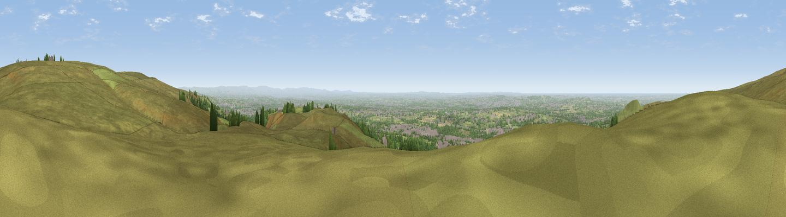

Two Lads
#1985 in England · top 1% of its area beats it · near HorwichWhere it is
The exact computed spot (SD 65562 13309). Click the marker for map links.
The view, rendered

A 360° render of this exact spot computed from the terrain model, tree cover and land cover — summer colours, afternoon light, calibrated against photographs of famous viewpoints. Real trees, hedges and buildings will differ in detail.
The panorama
Grey silhouette: terrain skyline in each direction (720 bearings, Earth curvature and refraction included). Dashed green: skyline with trees (+15 m) and buildings (+8 m) as obstacles. Blue strip: how far the ground is visible on each bearing.
Where the view opens
Wedge length = distance to the farthest visible ground on that bearing (vegetation-aware). Rings at 10, 25 and 50 km.
What fills the view
66% grassland · 16% woodland · 12% built-up · 4% cropland · 2% water
Angular shares of the visible panorama (visual magnitude), not map area. Landscape diversity 0.44 (0–1 Shannon).
Key numbers
More beautiful places nearby
The staircase of upgrades: each row has a higher view potential than everything closer. Driving times are estimates from straight-line distance, calibrated against real road routing — check an actual route before setting out.
| Place | Direction | Drive | Score |
|---|---|---|---|
| Viewpoint near Horwich | SSE · 1 km | ~3 min | 81.0 |
| White Brow | SSE · 1 km | ~3 min | 82.9 |
| Warton Crag | NNW · 62 km | ~84 min | 83.2 |
| Viewpoint near Grange-over-Sands | NNW · 70 km | ~93 min | 83.4 |
| Viewpoint near Cartmel | NNW · 72 km | ~96 min | 87.0 |
| Viewpoint near Cartmel | NNW · 73 km | ~96 min | 87.2 |
| Viewpoint near Finsthwaite | NNW · 80 km | ~104 min | 90.3 |
| The Knoll | S · 326 km | ~324 min | 91.0 |
53.61519, -2.52205 · source: osm peak · position refined by local search. Computed location — check access rights before visiting.